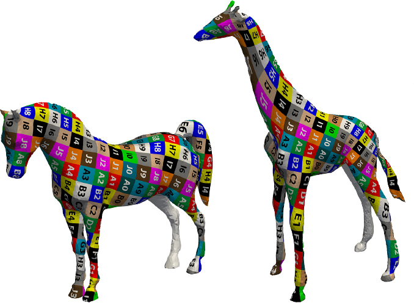

Noam Aigerman
Weizmann Institute of Science
Department of Computer Science and Applied Mathematics
Ziskind building, Room 36
Email firstname.lastname@weizmann.ac.il
Phone +972-8-934-4443
Department of Computer Science and Applied Mathematics
Ziskind building, Room 36
Email firstname.lastname@weizmann.ac.il
Phone +972-8-934-4443
I am a PhD student under the supervision of
Dr. Yaron Lipman.
My main fields of interest are Geometry Processing, Computer Graphics and Numerical Optimization.
My main fields of interest are Geometry Processing, Computer Graphics and Numerical Optimization.
Teaching 2013: TA for "Numerical Linear Algebra and Convex Optimization".
Publications
(hover over a project's image for a short summary)
|  |
Lifted Bijections for Low Distortion Surface Mappings |

|
Controlling Singular Values with Semidefinite Programming |
 an input piecewise-linear mapping of a triangular\tetrahedral mesh.")
|
Injective and Bounded Distortion Mappings in 3D |